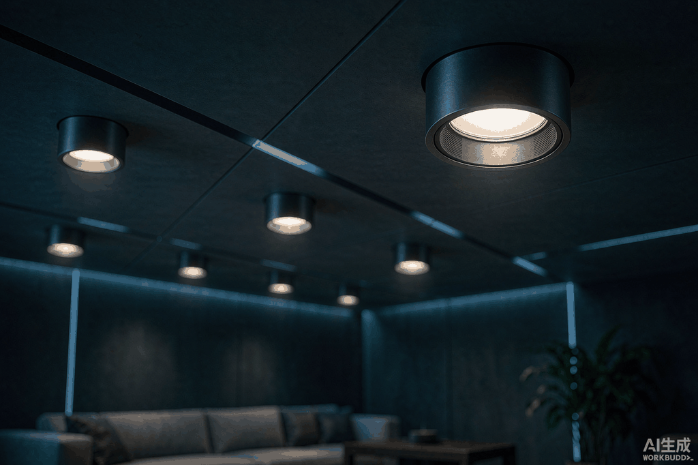
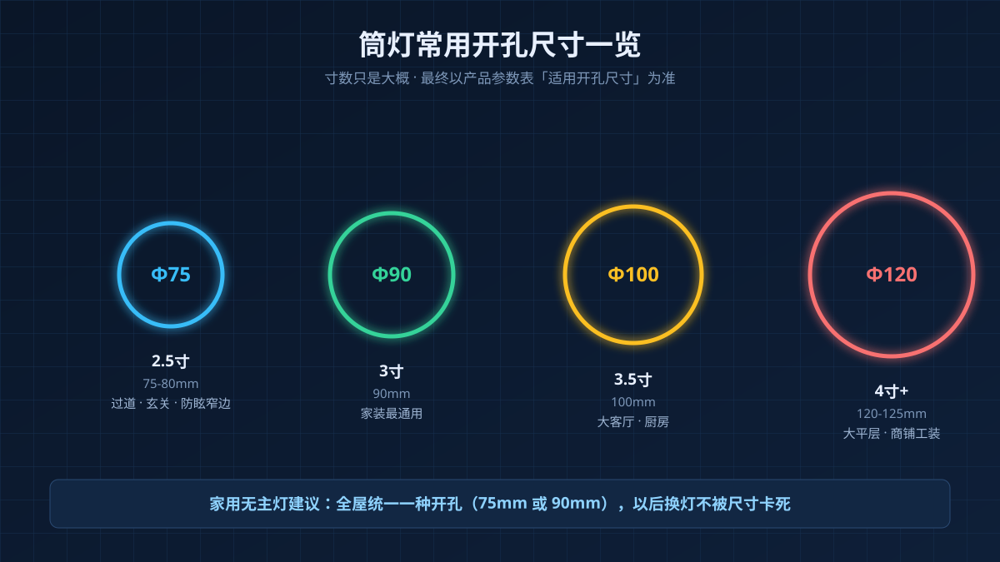
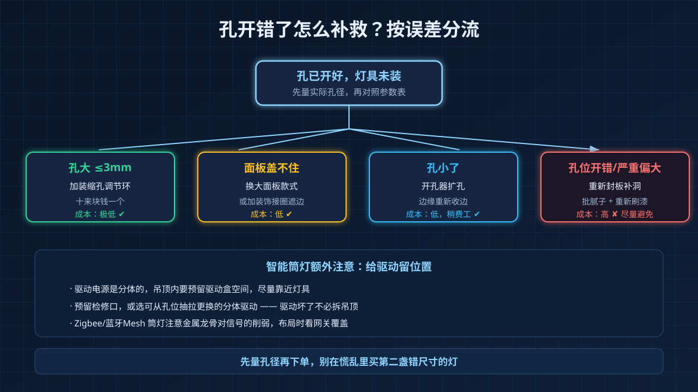

装修群里几乎每周都会出现同一段对话：木工站在梯子上问"筒灯给我开多大？"，业主翻着聊天记录答不上来，最后师傅一句"那就统一开9公分吧"——等灯具到货才发现，买的是75mm开孔的防眩筒灯，孔大了一截，面板盖不住，黑边露在外面，难看不说，还卡不紧。
开孔这一步发生在吊顶封板之前，它是整个无主灯设计里"返工成本最高"的动作之一：孔开错了，轻则补一圈收边，重则重新封板、重新批腻子刷漆。这篇就把尺寸、顺序、补救一次讲清楚。

一张表记住常用开孔尺寸
行业里说的"寸"是英寸（1英寸≈25.4mm），但不同品牌同是"3寸"，开孔可能差5mm，所以寸数只能当大概，最终以产品参数表里的"适用开孔尺寸"为准。家用常见规格大致如下：
| 标称规格 | 常见开孔直径 | 典型场景 |
|---|---|---|
| 2.5寸 | Φ75-80mm | 过道、玄关、卧室、防眩窄边款 |
| 3寸 | Φ90mm | 家装最通用，客厅卧室都够用 |
| 3.5寸 | Φ100mm | 大客厅、厨房，亮度更高 |
| 4寸及以上 | Φ120-125mm | 大平层、商铺、工装场景 |
如果你的装修是"家用无主灯"，我的建议和之前选购文里说的一致：全屋尽量统一一种开孔（75mm或90mm）。统一的好处不只是好看——将来无论换哪个品牌的灯，都不会被尺寸卡死。
先买灯，再开孔，顺序不能反
网上大量翻车案例的根源就一个：先开孔，后买灯。正确顺序是：
- 定好灯具型号（至少定到"开孔Φ75"这个精度）；
- 把参数表发给木工，标注"适用开孔75mm"；
- 木工按此尺寸开孔，灯具进场后核对再封板。
为什么不能反过来？因为灯具的"适用开孔"存在品牌差异：同样是"2.5寸"，A牌要75mm、B牌可能要80mm；面板直径的差异更大，从105mm到140mm都有。凭经验盲开，等于把决定权交给了运气。
另外记住一句口诀：开孔宁小勿大。孔小了可以扩，几秒钟的事；孔大了想缩回去，就麻烦得多。
不同吊顶，规矩不一样
- 石膏板吊顶：最常见。开孔尺寸比标称值大1-2mm即可，方便弹簧卡扣张合；孔位要避开龙骨，开孔前让师傅用探测器扫一遍，切到龙骨要么移位、要么削弱吊顶强度。
- 铝扣板吊顶（厨卫集成吊顶）：板材薄且可拆卸，建议开孔宜小不宜大，必要时配转换支架固定，装反了也方便拆下来重来。
- 木质/硬质吊顶：散热更重要，开孔比标称大3-5mm，给灯体留散热余量。
- 吊顶内净深：普通筒灯需要12-15cm的吊顶空间，层高紧张或无吊顶的区域选超薄款（灯体高度5cm左右，但要注意超薄款散热普遍更弱）。
布局上还有两个数字：相邻两盏筒灯的中心距建议80-120cm，离墙面至少留30-50cm，不然光斑会怼在墙上变形，洗墙效果全无。
孔已经开错了？三种补救方案

先别慌，按误差大小分情况处理：
| 情况 | 补救办法 | 成本 |
|---|---|---|
| 孔大了3mm以内 | 加装缩孔调节环（十来块钱一个） | 极低 |
| 孔大出面板盖不住 | 换更大面板直径的款式，或加装饰接圈 | 低 |
| 孔小了 | 用开孔器扩孔，边缘重新收边 | 低，但费工 |
| 孔位整体开错/严重偏大 | 重新封板补洞批腻子 | 高，尽量避免 |
所以回到那句：宁小勿大，先定灯再动刀。
装智能筒灯，多留一个"驱动位"
智能筒灯和普通筒灯在开孔上的差别不大，但多一个隐藏需求：驱动电源是分体的，要塞在吊顶上方。下单前确认三件事——
- 吊顶内有没有放驱动盒的空间（尽量靠近灯具，别为了省事放十几米外）；
- 预留检修口或选用可从孔位抽拉更换的分体驱动，否则驱动坏了同样要拆吊顶；
- Zigbee/蓝牙Mesh智能筒灯还要看网关覆盖，吊顶金属龙骨密集的区域信号会打折，布局时留意。
一句话总结：尺寸看参数表、顺序先灯后孔、开孔宁小勿大、驱动提前留位。木工进场前把这四句话发给工头，能省掉无主灯装修里最贵的一次返工。
有智能筒灯选型、驱动匹配的问题，欢迎留言，看到都会回。